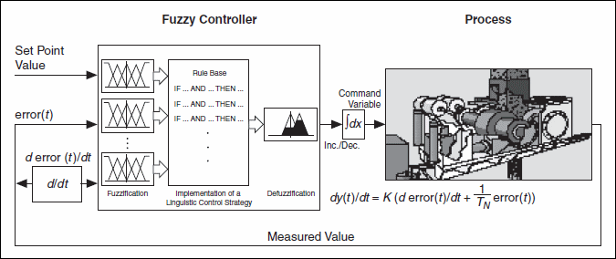

A PI controller is a controller that produces proportional plus integral control action. The PI controller has only one input and one output. The output value increases when the input value increases.
A fuzzy-PI controller is a generalization of the conventional PI controller that uses an error signal and its derivative as input signals. Fuzzy-PI controllers have two inputs and one output. Multiple inputs allow for greater control diversity for a fuzzy-PI controller over a conventional PI controller.
The fuzzy-PI controller shown in the following image uses the error signal e(t) and its derivative de(t)/dt from the measured data preprocessing step as inputs. If the output signal describes the necessary difference toward the current output value, you need a subsequent integrator device to build up the command variable value.

The benefit of the fuzzy-PI controller is that it does not have a special operating point. The rules evaluate the difference between the measured value and the set value, which is the error signal. The rules also evaluate the tendency of the error signal to determine whether to increase or decrease the control variable. The absolute value of the command variable has no influence.
Another advantage of a fuzzy-PI controller over a conventional PI controller is that it can implement nonlinear control strategies and that it uses linguistic rules. With fuzzy-PI controllers, you can consider the error tendency by itself when the error becomes small.